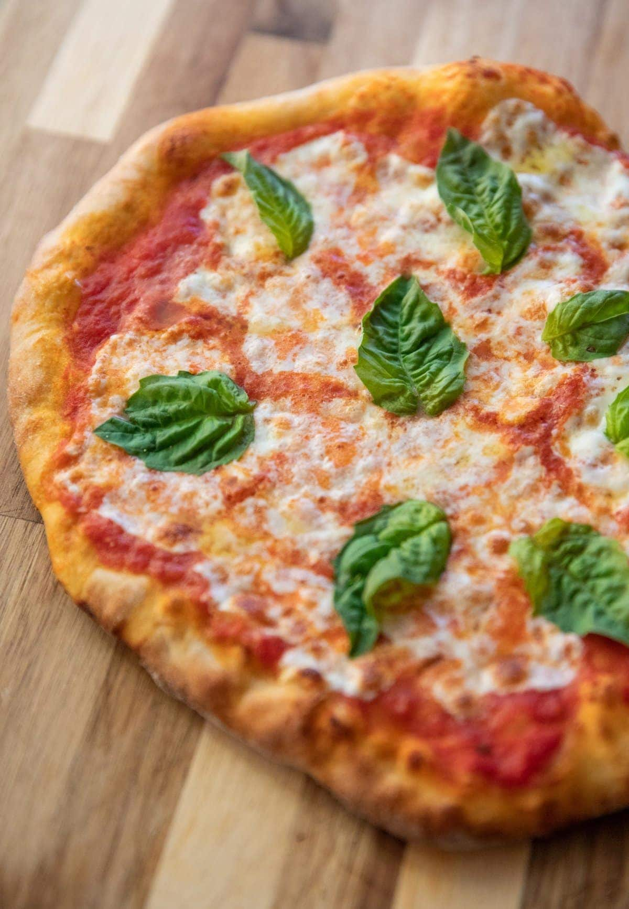

Pizza

Easy Margherita Pizza
Store-bought dough, hot oven, done in under 30 minutes.
Ingredients
- 1 pounds pizza dough
- 0.5 cups crushed tomatoes
- 8 ounces fresh mozzarella, torn
- 1 tablespoons olive oil
- 0.5 teaspoons salt
- 8 fresh basil leaves
Steps
- Preheat oven: Preheat oven to its max (475–500°F / 245–260°C) with a sheet pan or pizza stone inside.
- Shape dough: Stretch 1 pounds pizza dough into a 12-inch round on parchment.
- Top: Season 0.5 cups crushed tomatoes with 0.5 teaspoons salt and spread thinly, leaving a border. Scatter 8 ounces fresh mozzarella, torn and drizzle with 1 tablespoons olive oil.
- Bake: Slide onto the hot pan and bake until crust is golden and cheese bubbles.
- Finish: Top with 8 fresh basil leaves, slice, and serve.
Home